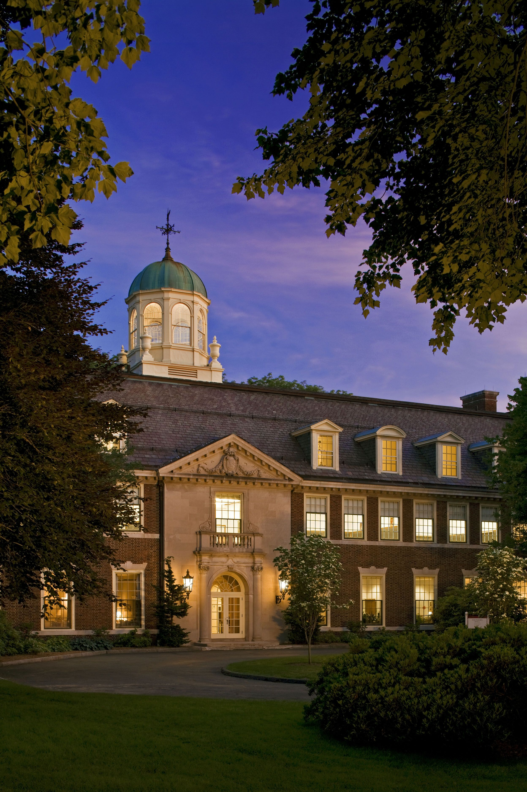

Windsor, Connecticut
We've arranged rooms at the Marriott Hartford Windsor Airport, just minutes from Loomis Chaffee. It's a comfortable, full-service hotel with easy access to campus.
The hotel runs a complimentary shuttle from Bradley International Airport (BDL). No need to rent a car just to get there.
Loomis Chaffee is located in Windsor, Connecticut, easily accessible from Bradley International Airport (BDL), which is served by most major carriers.
We'll arrange daily pick-up and drop-off between the Marriott and campus via a school van. No need to worry about parking or navigation.
If you have your own vehicle, Loomis Chaffee is a short, easy drive from the hotel. Use the link below for turn-by-turn directions.
Get Directions ↗All meals on campus are covered by Loomis Chaffee — you won't need to worry about food costs during the symposium.
Each morning will begin with a light breakfast on campus. Lunches will be sandwiches and light fare, giving us time to keep the conversation going. Dinners will be shared together as a group.
Our closing dinner on Wednesday will be a proper celebration of our time together.
We're exploring optional excursions during open hours or evenings. The Mass MOCA trip could be a good Thursday option for those with later travel. Both destinations connect to our symposium themes. More details to come.
An extraordinary collection tracing the history of human communication — from telegraph to radio to early computing. A hands-on encounter with the machines that made the modern world.
Learn More ↗A cutting-edge exhibition at Massachusetts Museum of Contemporary Art exploring how technology mediates human connection, creativity, and meaning-making in contemporary life.
Learn More ↗
We look forward to welcoming you to campus.